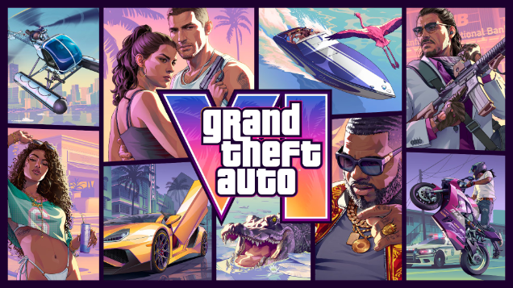

| Estadística |
| Primer GTA |
| Próxima entrega principal |
| Total de ventas de la franquicia |
| Ventas de Grand Theft Auto V |
| Año de Grand Theft Auto V |
| Protagonistas principales de Grand Theft Auto V |
| Protagonistas principales de Grand Theft Auto VI |
| Tiempo entre GTA V Y GTA VI |
| Ciudades mas conocidas |
| Dato |
| 1997 |
| Grand Theft Auto VI |
| Mas de 475 millones |
| Mas de 230 millones |
| 2013 |
| 3 |
| 2 |
| 13 años |
| Liberty City,Vice city y Los Santos |
Fuente principal: informes financieros de Take-Two Interactive y documentación de Rockstar Games.
Mi conclusión: lo más interesante de GTA es comprobar cómo ha evolucionado tecnológicamente. GTA III transformó el concepto de mundo abierto, San Andreas amplió enormemente las posibilidades de juego y GTA V convirtió la franquicia en un fenómeno comercial extraordinario.